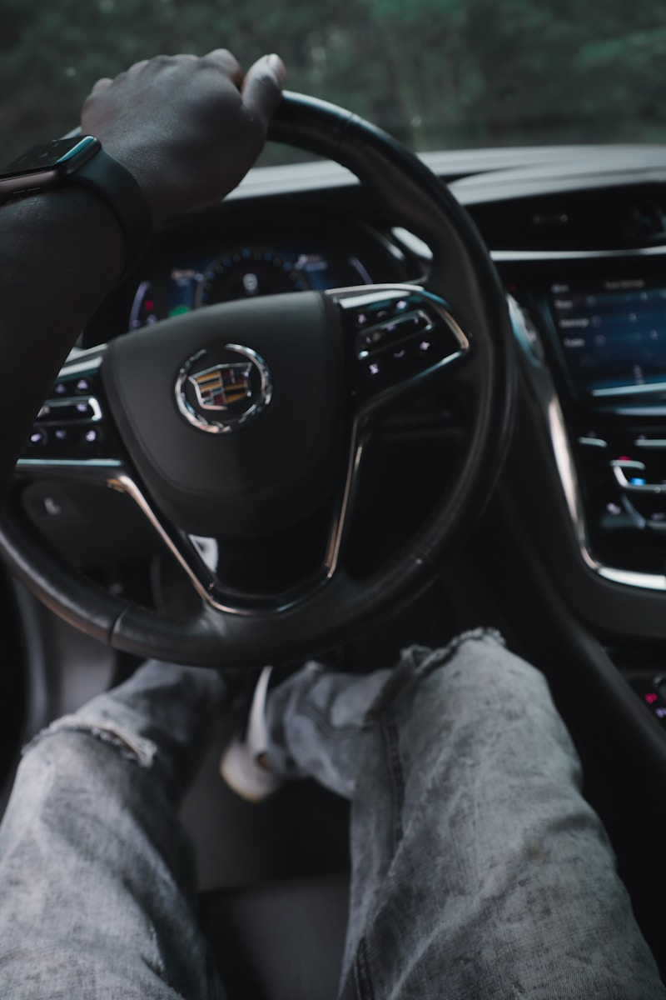

Buick Repair & Service in Cedar Rapids
Refined crossovers and SUVs — maintained with the care they deserve.
Professional Buick Repair in Cedar Rapids
Buick has evolved into a lineup of refined crossovers and SUVs that blend comfort, technology, and everyday practicality. At Cedar Automotive, we service the entire Buick range — the Encore subcompact SUV, Encore GX compact crossover, Envision mid-size SUV, and Enclave three-row family hauler. Whether you drive a turbocharged Encore GX or a V6-powered Enclave, we understand the systems that keep your Buick running smoothly and comfortably.
Modern Buicks rely on sophisticated powertrains including turbocharged 1.2-liter and 1.3-liter three-cylinder engines paired with CVT or 9-speed automatic transmissions. These smaller-displacement turbo engines deliver strong performance and efficiency, but they require proper maintenance intervals and timely attention when issues develop. Ignoring a turbo oil feed line leak or transmission shudder can turn a minor repair into a major one. Our technicians know the common failure points on every current Buick platform and address them before they escalate.
Buick owners expect a quieter, more refined ownership experience — and that extends to how their vehicle is serviced. At Cedar Automotive, we take the time to explain every repair, answer your questions, and keep you informed throughout the process. We are conveniently located in Cedar Rapids near the regional airport and serve Buick owners across Eastern Iowa.
Buick Services We Provide
- Full-synthetic oil change service for all Buick engines
- Brake pad and rotor replacement with electronic brake system reset
- Transmission service and repair — CVT and 9-speed automatic
- Engine diagnostics and repair for turbocharged and naturally aspirated powertrains
- Electrical system diagnostics — infotainment, driver assistance, BCM
- Suspension and steering service — struts, shocks, control arms, bushings
- AC system diagnosis and repair — condenser, compressor, refrigerant service
- Turbocharger inspection and service for 1.2T and 1.3T engines
- Car key and key fob programming

Why Choose Us for Your Buick?
GM Platform Expertise
We service the full General Motors family — Buick, Chevrolet, GMC, and Cadillac — so we know these shared platforms, powertrains, and electronics inside and out.
Transparent Service
Every repair is explained in plain language before we begin. We show you the problem, present your options, and never upsell work your Buick does not need.
Modern Diagnostics
Our professional-grade scan tools read manufacturer-specific fault codes across all Buick modules — engine, transmission, body control, and advanced driver assistance systems.
Common Buick Issues We Repair
Transmission Shudder (9-Speed)
The 9-speed automatic transmission used in many Buick crossovers is known for torque converter shudder, harsh shifting, and hesitation during low-speed acceleration. In many cases a transmission fluid flush with the updated GM specification fluid resolves the issue. When it does not, we diagnose and repair the torque converter or valve body as needed.
Turbo Oil Feed Line Leaks
The turbocharged 1.2-liter and 1.3-liter three-cylinder engines in the Encore GX and Envision can develop oil leaks at the turbo oil feed and return lines. These leaks drip oil onto hot exhaust components and create a burning smell. Left unaddressed, low oil levels can damage the turbocharger bearings. We replace the lines and gaskets to stop the leak and protect the turbo.
Power Steering Failures
Buick models with electric power steering can develop assist motor failures or torque sensor faults that cause heavy steering, warning lights, or intermittent loss of power assist. We diagnose the steering system electronically to determine whether the issue is the motor, sensor, or control module, and repair accordingly.
AC Condenser Leaks
Buick crossovers and SUVs are susceptible to AC condenser damage from road debris and stone impact. A leaking condenser cannot hold refrigerant, leaving you without cold air in Iowa summers. We locate the leak, replace the condenser, and properly evacuate and recharge the AC system.
Intake Manifold Issues
Some Buick engines develop intake manifold gasket leaks or runner control failures that cause rough idle, poor performance, and check engine lights. Carbon buildup on intake valves is also common with direct-injection engines. We diagnose manifold problems accurately and perform repairs or intake valve cleaning as needed.
Wheel Bearing Wear
Buick crossovers and SUVs can develop wheel bearing failures that produce a humming or growling noise that increases with vehicle speed. Bad wheel bearings also affect ABS and traction control operation. We identify the affected bearing and replace the hub assembly to restore quiet, safe operation.
Related Services
Frequently Asked Questions
What Buick models do you service?
Cedar Automotive services the full Buick lineup including the Encore subcompact SUV, Encore GX compact crossover, Envision mid-size SUV, and Enclave three-row SUV. We work on all model years and all powertrain configurations including turbocharged three-cylinder and four-cylinder engines.
Is independent Buick repair less expensive than the dealership?
Yes. Cedar Automotive provides the same quality of service using equivalent diagnostic tools and OE-grade parts, but our labor rates are significantly lower than dealership pricing. You receive dealer-level expertise and the same repair quality without the dealer-level bill.
Can you fix the transmission shudder on my Buick?
Yes. The 9-speed automatic used in many Buick models is known for torque converter shudder and rough shifting. In many cases, a transmission fluid flush with the updated GM specification fluid resolves the problem. When it does not, we diagnose and repair the torque converter or valve body as needed.
Do you program Buick keys and fobs?
Yes — we program Buick keys and key fobs for all models including Encore, Envision, Enclave, and Envista. We handle transponder key programming, proximity fob replacement, and all-keys-lost situations at independent shop prices. Call (319) 450-7584 for pricing.